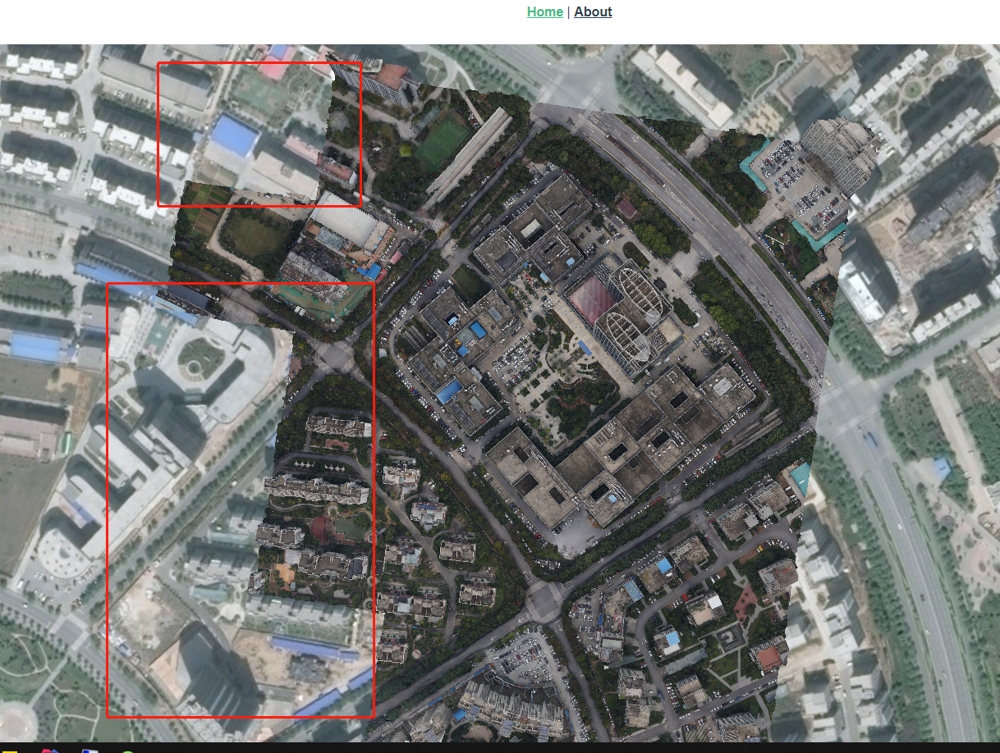
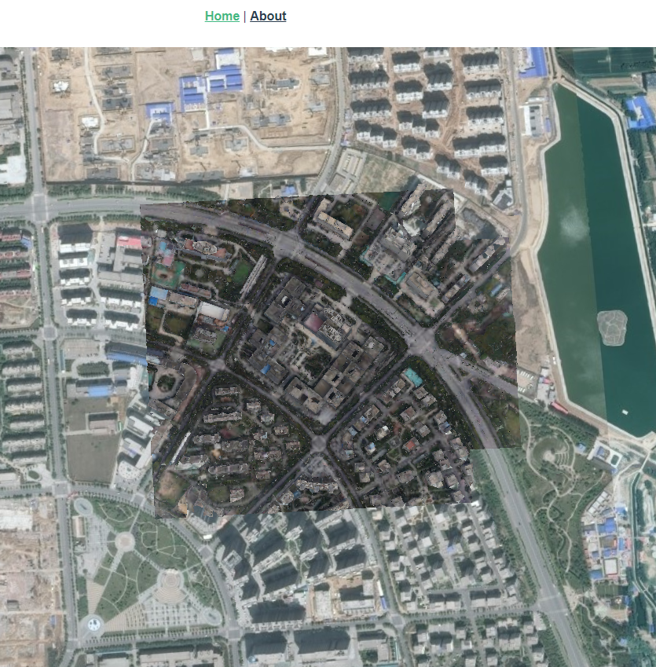

cesium加载三维倾斜模型
前言
目前cesium加载海量模型，并不能直接通过gltf文件来使用，一种较为合适的通用做法是对大场景进行切片，即生成影像金字塔(LOD)。这样就跟wmts或tms方式一样来加载超大的影像。
osgb生成3dtiles
1.osgb文件什么样
主要长下面的样子，由一个元数据xml和一个Data文件夹组成，Data里面包含的是由一系列不同编号的osgb文件夹组成


2.如何生成3dtiles
目前市面上的解决方案主要有cesiumlab/osg2cesiumApp。鉴于cesiumlab目前好像开始需要注册和收费，本着白嫖的精神使用另外一种文件进行转换就可以了。
高阶大佬可以直接转步github,3dtiles是个好工具，以前研究过，但因为技术太渣和时间限制，没有对其进行详细的研究。
osg2cesiumApp
直接按照说明使用即可，下图中的数据是一个错误的参数，srs坐标系和原点都不对，应该是从xml文件里面获取的，但我拿到的测试数据坐标系没有转换，所以才导致后来发生了好多坑。

cesiumlab
因为已经有一份以前转换好的数据，关于这方面的叙述就先不展开了。cesiumlab或者其他的地方已经有很详细的资料了，直接拿来参考即可。
osg2cesiumApp与cesiumlab比较
两者都可以直接生成3dtiles，但生成的效果略有不同。
osg2cesiumApp生成的效果
cesiumlab生成效果

如图所示，能够很明显的看出来问题。
app生成的模型在地图缩放的时候，需要等待片刻才能显示所有的模型，lab生成的模型却不存在这个问题。
app模型看起来精细程度较高。
深入分析原因，可能是lab采用了
分级tileset.json，所以在不同层级能够获得较好的加载效果，但同时也损失了部分精细程度。
cesium加载3dtiles
1.读取3dtiles文件
我使用的是nginx进行代理，这样生成的文件就不必非得存放到指定的位置，只要进行地址映射就好了
2.cesium直接加载
目前模型生成之后，加载到地图上找不到在哪里，只能通过移动模型中心点位置和高度才可以显示。
(2020年4月14日11:36:37更新)
现在使用原生的cesium可以正常加载，也没有任何显示问题，上次是因为使用了超图的cesium框架，具体细节未知，更加坚定了使用原生框架来解决问题。模型高度不准确
需要在模型加载之后，通过设置模型的高度来调整即可var tileset = new Cesium.Cesium3DTileset({ url: '/3dtiles/wkm4326/WKM/tileset.json' }) viewer.scene.primitives.add(tileset) // 修改高度 const h = -10 tileset.readyPromise.then((arg) => { var cartographic = Cesium.Cartographic.fromCartesian(arg.boundingSphere.center) var surface = Cesium.Cartesian3.fromRadians(cartographic.longitude, cartographic.latitude, cartographic.height) var offset = Cesium.Cartesian3.fromRadians(cartographic.longitude, cartographic.latitude, cartographic.height + h) var translation = Cesium.Cartesian3.subtract(offset, surface, new Cesium.Cartesian3()) tileset.modelMatrix = Cesium.Matrix4.fromTranslation(translation) viewer.zoomTo(tileset) })